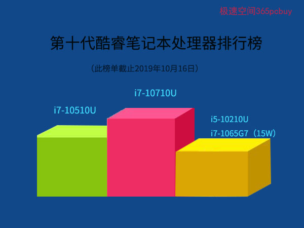

文章标题
发表时间：2019-11-10 文章浏览次数：2165 作者：pc大湿
此文为装机大湿CPU性能分析技术文章，具有较强的时效性，后期这个排名很可能变化。
笔记本电脑如何选？要先看”CPU性能“。此文将带您了解酷睿十代处理器的性能排行（不考虑核显），并将给出一些推荐的笔记本配置。
第十代酷睿情况比较复杂，首次出现了在同一代中有两种核心：Comet Lake（彗星湖）和Ice Lake（冰湖）。目前已经发布了20款处理器（以当天intel数据库为准），分别有：
i7-1065G7、1060G7、10710U、10510U、10510Y
i5-1035G7、1030G7、1035G4、1030G4、1035G1、10210U、10310Y、10210Y
i3-1000G4、1005G1、1000G1、10110U、10110Y
奔腾金牌6405U
赛扬5205U
这么多型号，拉个性能排名会是什么情况？
一定是i7>i5>i3吗？
不一定。

为了简化起见，此文中我们排除了性能较低的型号：带Y后缀、奔腾和赛扬，剩下13个选手，
他们的CPU性能排名（未考虑核显性能和AVX-512）如下：
状元：i7-10710U
TDP（注：此文的TDP，未经特别说明，均为Nominal值）：15W
核心：6核12线程
频率：1.1-4.7GHz
简评：U系列可能做梦都没想到，intel会把6核12线程的福利下放到它的身上。在此之前，只有高端的H/HK系列才能享受这个待遇。i7-10710U的出现，说明intel想进一步提升轻薄本的生产力，有点鱼和熊掌兼得的意思，这对于有图形、视频渲染、专业软件需求的用户来说，将会有很大的吸引力。
榜眼：i7-10510U
TDP：15W
核心：4核8线程
频率：1.8-4.9GHz
简评：在移动版处理器中，45W是专业跑鞋，25W是普通运动鞋，15W是布鞋，9W是拖鞋。i7-10510U如果穿双运动鞋，能和i5-9300H这样的标压处理器一较高低。TDP还有更低的，7W、5W、算什么鞋？7W是人字拖，5W只能是“螃蟹”，和螃蟹走路的速度也差不太多。
参考配置：宏碁蜂鸟FUN i7-10210U/8G/512G SSD/MX250 2G独显) 查看>>
探花：i5-10210U
TDP：15W
核心：4核8线程
频率：1.6-4.2GHz
简评：以微弱优势击败了i7-1065G7。判断二者的性能高低是个难点。方法如下：
以i7-8565U（1.8~4.6GHz ）为参照物。按道理说，10210U的核心效率并没有什么提升，频率还低一截，应该打不i7-8565U啊？根据目前已有的跑分，联想小新AIR15在均衡模式下CINEBENCH R15测试，i5-10210U为652分，野兽模式达到725分，i7-8565U大约在580~650分之间。再对比passmark分数也是如此，这是为何？
原来，i5-10210U采用的Comet Lake（彗星湖）核心，支持Intel动态调优技术（DDT），首次支持基于人工智能进行预先训练的算法，预测工作负载，并允许更高的睿频加速，通过智能利用功耗和散热空间余地，更长时间运行在更高的TDP，额外获得8-12％的性能提升。
因此，在装机大湿笔记本CPU性能排行榜中，i5-10210U比i7-8565U高大约1%。i7-1065G7（15W）比i7-8656U低1%。
（注：由于三者的差距非常微弱，目前资料很有限，后期他们的排行会不会调整，还难说。）
小米在第十代酷睿笔记本的动作有点快，i7-10510U经常缺货，i5-10210U主力产品，货源充足，性价比还更好些。
推荐配置：RedmiBook 14 增强版 全金属超轻薄笔记本（i5-10210U/8G/512G SSD/MX250 2G独显) 查看>>
第四名：i7-1065G7
TDP：15W
核心：4核8线程
频率：1.3-3.9GHz
简评：第十代酷睿移动版中，名称中带G1/G4/G7的，都隶属于10nm家族，核心代号Ice Lake， 采用了全新的Sunny Cove（阳光湾）微架构，支持DL Boost深度学习技术，IPC比Skylake（第六代酷睿）提升达到18%，看起来有些厉害，但由于频率较低，i7-1065G7稍逊于i5-10210U。再次强调，这个”稍逊“是指的CPU性能，并不包含核显。
不是还有i7-1068G7么？截止此文发表日期，它尚未正式进入intel官网数据库，这里暂时忽略。
选购指南：
虽然i7-1065G7在性能上（未考虑AVX512）落榜前三甲，但是，选电脑有个原则：买新不买旧，从架构和工艺看，采用10nm、Sunny Cove微架构的i7-1065G7比i5-10210U更优秀，如果在其余配置（显卡内存硬盘）和价格相差不大的情况下，应该优选i7-1065G7。
推荐配置：dell i7-1065G7/8G/256GB固态+1TB/MX230 2G独显/14英寸IPS 查看>>
第五名：i5-1035G1/G4/G7
TDP：15W
核心：4核8线程
频率
i5-1035G1：1.0-3.6GHz
i5-1035G4：1.1-3.7GHz
i5-1035G7：1.2-3.7GHz
简评：从频率看出，三者还是有点差异的，为简化起见，就让他们并列第五吧。
推荐配置：惠普HP星i5-1035G1/8G/MX250/512G固态/15.6 IPS 查看>>
第六名：i5-1030G4/G7
TDP：9W
核心：4核8线程
频率
i5-1030G4：0.7-3.5GHz
i5-1030G7：0.8-3.5GHz
简评：TDP太低，只比Y系列稍好点，这导致其性能不如上一代的i5-8250U。
细心的读者可能会发现，i5-1035Gx有1、4、7，而i5-1030Gx只有4和7，没有1（至少目前还没有），个中原因可能是其CPU性能不及i5-8250U，全靠G4G7核显（Iris Plus ）挽回点面子。而G1的核显相比UHD630优势不大。
第七名：i3-10110U
TDP：15W
核心：2核4线程
频率：2.1-4.1GHz
简评：此型号是i3-8145U的升级版。成天游手好闲，想着不劳而获的人应该买一台这个本本，一方面随时看看CPU型号，提醒自己不要做非法之事，同时可以学习一技之长。
市场有一款某一线品牌的i3-10110U/4G/13.3寸超极本，3000多元，看起来不错，但注意，这是板载4G内存，且没有空余内存插槽，只能用4G，4G在win10下能用什么，开两三个网页，做个word扫个雷，真不知道这个设计师是怎么想的。这些配置上的坑，避开为好。
第八名：i3-1005G1
TDP：15W
核心：2核4线程
频率：1.2-3.4GHz
简评：凭借着IPC大增，DL Boost（深度学习加速）和DT2.0等技术，战胜了i3-8145U。
推荐配置：戴尔dell i3-1005G1/8G/核心显卡/256G固态/14寸 IPS 查看>>
第九名：i3-1000G1
TDP：9W
核心：2核4线程
频率：1.1-3.2GHz
简评：Ice Lake中垫底的选手，想象一下，一个重点班有20个人，每次考试都是最后一名的感觉。可能，它的内心中在呼喊着：“把我调到普通班吧！”对，到了奔腾、赛扬、Y系列中、它又可以骄傲一下了。
结束语
作者阅读了大量评测资料，然而，受限于评测环境（如系统、驱动版本、散热模式等），这些数据有的并不可靠，站长也无法把所有第十代酷睿笔记本集中到一起来一次PK。因此，这个排名后期可能有变数，特别是性能相近的型号。酷睿十代笔记本处理器还会有新型号加入，这个排行榜位置也必将发生变化。
如果您想知道这些处理器具体差距数值，可以查阅装机大湿笔记本CPU天梯图>>